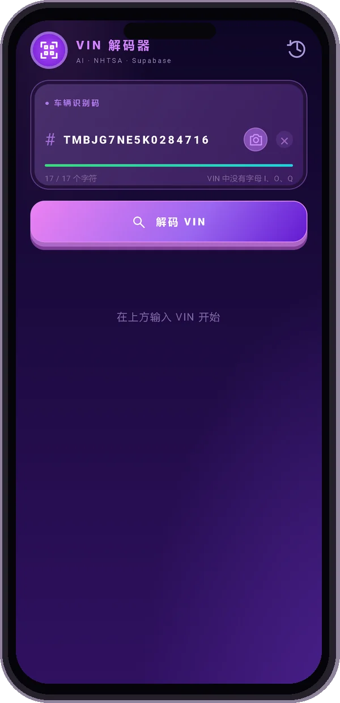
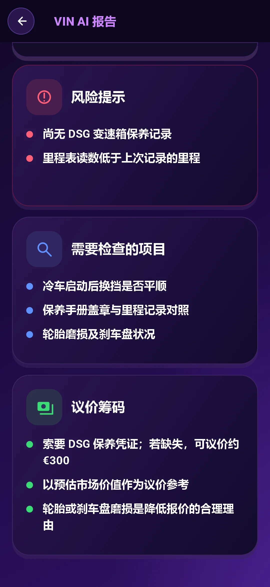
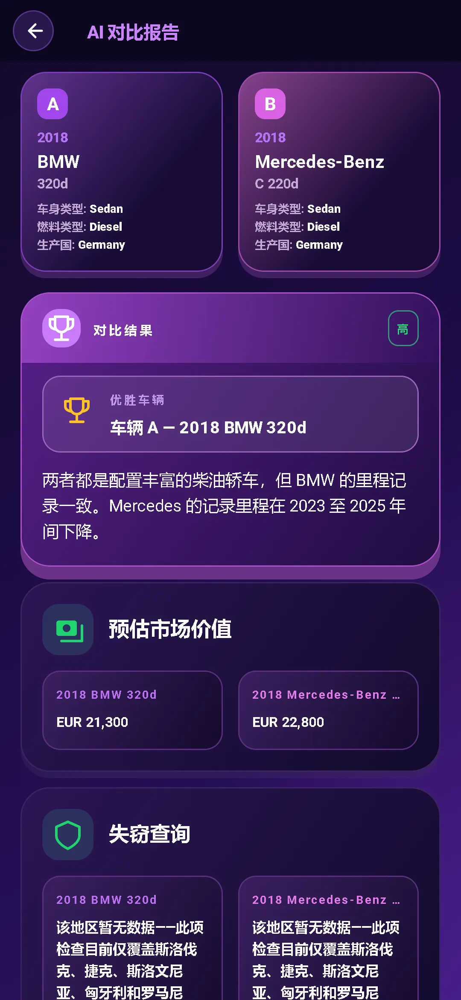

扫描 VIN
将相机对准 VIN 或手动输入，先免费查询车辆的基础参数。
每辆二手车都有自己的经历。从 VIN 开始了解。
了解参数，识别风险，做好与卖家沟通的准备。
报告预览已锁定。数据可用性因车辆和来源而异。
在 Google Play 下载基础 VIN 解码免费。完整 AI 报告 $3.99。无需订阅。

不止于 VIN 查询。把车辆细节转化为值得问清的关键问题。
将相机对准 VIN 或手动输入，先免费查询车辆的基础参数。
解码发动机、配置、驱动形式等信息，并查看 NHTSA 召回、车主投诉和碰撞评级，以及 EPA 燃油经济性数据。
查看市场估值和里程信息，在议价前了解卖家报价是否合理。
获取 AI 的购买、谨慎或放弃建议，同时查看检查评分、潜在薄弱环节及现场检查项目。
带着关键问题与卖家沟通。参考检查和议价建议，规划下一步。
与 AI 助手聊天，也可以针对照片提问。支持 10 种语言，帮助你理解车辆细节。


并排比较两辆车，查看各自参数与 AI 分析，在出发看车前权衡优缺点。
在挡风玻璃下方、车门门框或车辆文件上找到 17 位 VIN。
查看解码后的车辆参数，并获取包含风险、问题和实用建议的 AI 报告。
问清关键问题，核实相关记录，并在购买前安排独立检查。
一次性购买，无需订阅。
只需要基础信息？应用内基础 VIN 解码免费。
查询下一辆车之前，先了解能获得哪些信息。
车辆识别代号（VIN）是现代车辆使用的唯一 17 位识别编号。VIN 解码可将这一编号转换为车型、发动机、驱动形式等车辆参数。
查看驾驶员一侧挡风玻璃下方、驾驶员侧车门门框，或车辆登记和保险文件。在应用中可用相机扫描，也可手动输入。
完整 AI 报告包含解码后的车辆参数、购买／谨慎／放弃建议、检查评分、风险信号、检查项目、卖家问题及议价建议。应用还提供市场估值和里程信息、NHTSA 安全召回、车主投诉及碰撞评级，以及 EPA 燃油经济性数据。数据覆盖范围和可用性因车辆及来源而异。
应用内基础 VIN 解码免费。完整 AI 报告为一次性购买，价格 $3.99，无需订阅。
想查询你自己的车？在应用中输入车辆 VIN。
在 Google Play 下载基础解码免费 · 完整 AI 报告 $3.99 · 无需订阅